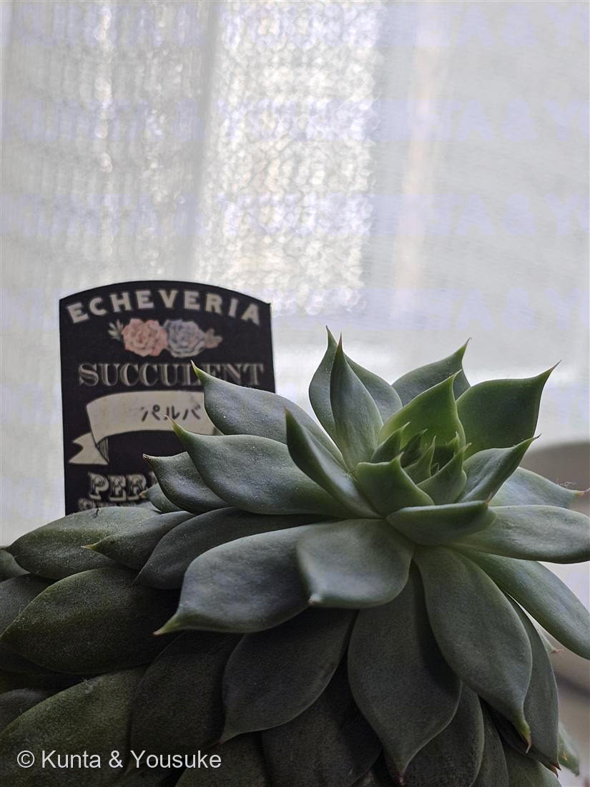

地図を読み込んでいるよ…
🔍 写真も地図も、押しているあいだ拡大して見られるよ（スマホは指を置いてすこし待ってね）。
🌍 の地図＝この子がもともと自生している場所を緑に。メキシコ（属として）。
⚠これは属（エケベリア属）のふるさと。この子は園芸品種で、種が分からないから、なかま全体の故郷を塗ったよ。
⚠ 地図は国（日本と中国だけ県・省）までしか塗れないから、ほんとうの分布より広く見えていることがあるよ。地図はだいたいの場所。正確なところは、上の文を見てね。
エケベリア・パルバ
Echeveria 'Parva'（園芸品種）
別名 · パルバ
ベンケイソウ科 · Crassulaceae（エケベリア属）
おうちの植物世話：陽介 · ラベル「パルバ」日ざしを浴びるとロゼットが締まる
名前と学名の由来
- Echeveria（エケベリア）＝18世紀メキシコの博物画家 アタナシオ・エチェベリア（Atanasio Echeverría）への献名。植物図譜の絵を描いた人。
- 'Parva'（パルバ）＝ラテン語 parva「小さい」。小型のロゼットを作ることにちなむ品種名。
この植物のこと
- ベンケイソウ科エケベリア属の多肉植物。メキシコ原産の仲間で、肉厚の葉がバラの花のようなロゼットを組む人気者。パルバは小型で、子株を出して群れる。
- 葉の表面の白い粉＝ブルームは日よけ＆水はじき（No.016 王冠竜の青白さと同じはたらき）。触ると取れるので、そっと。
- 日ざしが大好き：たっぷり日に当てると葉先が紅葉し、ロゼットがきゅっと締まって美しい。光が足りないと間のびして（徒長）、葉と葉のすき間が開き、色もぼんやりする。
- 春・秋がおもな成長期。細い花茎を伸ばし、先に釣鐘形の花をつける。お隣の No.017 ハオルチア とは日ざしの好みが正反対（あちらは明るい日陰）。
参考：多肉植物・エケベリアの一般的な栽培管理をもとに整理。